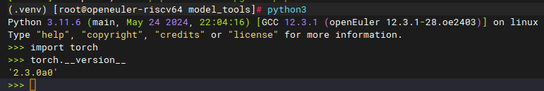
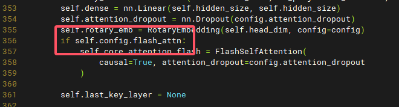
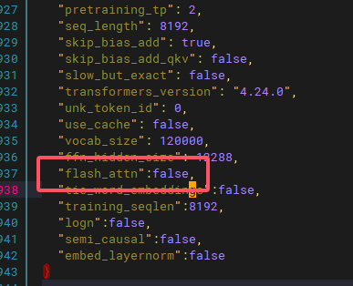
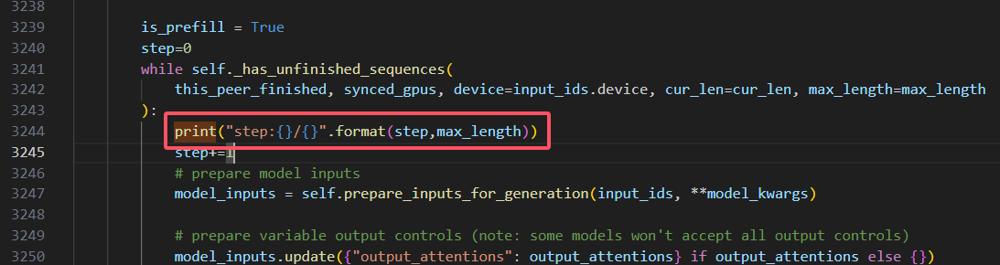

telechat-12B移植
从hf mirror下载模型
别问我为啥不在hf官网，梯子流量够用随便搞
download hfd,a tool to download base on aria2
wget https://hf-mirror.com/hfd/hfd.shchmod a+x hfd.sh设置hugginface下载环境变量
export HF_ENDPOINT=https://hf-mirror.com下载模型
./hfd.sh Tele-AI/TeleChat-12B --tool aria2c -x 4出现报错看下面的教程
下载数据集（用于记录，不用执行）
./hfd.sh wikitext --dataset --tool aria2c -x 4
aria编译
如果你跟着上面的步骤走，那一定会到这里，因为yum源没有aria2安装包，乐
克隆aria2源码
git clone https://github.com/aria2/aria2.gitbuild
autoreconf -i
autoreconf装了运行不了，缺少autopoint- yum install gettext-devel
装依赖
yum install openssl-devel zlib zlib-devel
./configure ARIA2_STATIC=yes
error:A compiler with support for C++11 language features is required.
+ solution:yum install g++
make install -j4
git-lfs编译
如果你跟着上面的步骤走，那一定会到这里，因为git-lfs妹有riscv64版本的，蚌
- 安装go
yum install golang
- 编译
1,克隆git-lfs
2,go env -w GOPROXY=https://goproxy.cn
3,添加bin目录到环境变量
4，执行git lfs install
openeuler-riscv上编译pytorch
依赖
dnf install python3-{hypothesis,psutil,pyyaml,requests,sympy,filelock,networkx,jinja2,fsspec,packaging,numpy,venv}下载gitee预编译riscv-whl
git clone --recursive https://github.com/pytorch/pytorch约4个GB，建议用梯子
cd pytorch && python3 setup.py develop
- 测试

安装transformers
git clone https://github.com/huggingface/transformers.git
下面这句逆天操作据说是ninja和cmake互相依赖导致无限递归的问题，乐
dnf install cmake python3-devel
安装rust compiler(逆天)export RUSTUP_DIST_SERVER=https://mirrors.ustc.edu.cn/rust-staticexport RUSTUP_UPDATE_ROOT=https://mirrors.ustc.edu.cn/rust-static/rustupcurl --proto '=https' --tlsv1.2 -sSf https://sh.rustup.rs | sh
pip install 'transformers[torch]'
运行python inference
- 问题1：需要安装flash-attn，然而该库依赖cuda支持
修改12B模型中的modeling_telechat.py的357，增加config中的flash-attn判断以取消初始化FlashSelfAttention类产生错误，如下图：

记得修改config中的参数

- 修改虚拟环境中.venv/lib/python3.11/site-packages/transformers/generation/utils.py用以显示进度

推理脚本如下：
1 | import os |
python3 test.py
huggingface转为onnx
pip install optimum[exporters]
运行以下脚本转换为onnx格式1
2
3
4
5
6
7
8
9
10
11
12
13
14
15
16
17
18
19
20
21
22
23
24
25
26
27
28
29
30
31
32
33
34
35
36
37
38
39
40
41
42
43
44
45
46
47
48
49
50
51
52
53
54
55
56
57
58
59
60import os
import torch
from transformers import AutoTokenizer, AutoModelForCausalLM
import onnx
import onnxruntime as ort
import numpy as np
os.environ['TRANSFORMERS_OFFLINE'] = '1'
class ModelWrapper(torch.nn.Module):
def __init__(self, model):
super().__init__()
self.model = model
def forward(self, input_ids, attention_mask):
# 显式传入 use_cache=False，确保不使用 past_key_values
outputs = self.model(input_ids=input_ids, attention_mask=attention_mask, use_cache=False)
# 只返回 logits，以避免复杂的输出结构导致的问题
return outputs.logits
def export_model_to_onnx(model_name, output_path, opset_version=13):
tokenizer = AutoTokenizer.from_pretrained(model_name, trust_remote_code=True)
model = AutoModelForCausalLM.from_pretrained(model_name, trust_remote_code=True)
model.eval()
model.config.use_cache = False
text = "This is a sample input for ONNX export."
inputs = tokenizer(text, return_tensors="pt")
# 用包装器替换原始模型
wrapped_model = ModelWrapper(model)
wrapped_model.eval()
input_names = ["input_ids", "attention_mask"]
output_names = ["logits"]
dynamic_axes = {
"input_ids": {0: "batch_size", 1: "sequence_length"},
"attention_mask": {0: "batch_size", 1: "sequence_length"},
"logits": {0: "batch_size", 1: "sequence_length"}
}
# 导出为 ONNX
torch.onnx.export(
wrapped_model,
args=(inputs["input_ids"], inputs["attention_mask"]),
f=output_path,
input_names=input_names,
output_names=output_names,
dynamic_axes=dynamic_axes,
opset_version=opset_version,
export_params=True,
do_constant_folding=True,
)
print(f"模型已成功导出到 {output_path}")
def validate_onnx_model(model_path, model_name, text):
tokenizer = AutoTokenizer.from_pretrained(model_name, trust_remote_code=True)
model = AutoModelForCausalLM.from_pretrained(model_name, trust_remote_code=True)
model.eval()
model.c
onnx使用hhb转为二进制可执行文件
利用npu加速执行
目前（2024-12-11）openeuler暂不支持npu。
2025-3-12, 当前使用openeuler24.03 sp1，已支持npu
手动挂载驱动，如下：
1 | insmod /lib/modules/6.6.0-72.0.0.76.oe2403sp1.riscv64/kernel/drivers/soc/xuantie/nna/img_mem/img_mem.ko.xz |
此时/dev文件夹出现vha0